神奈川県横浜市
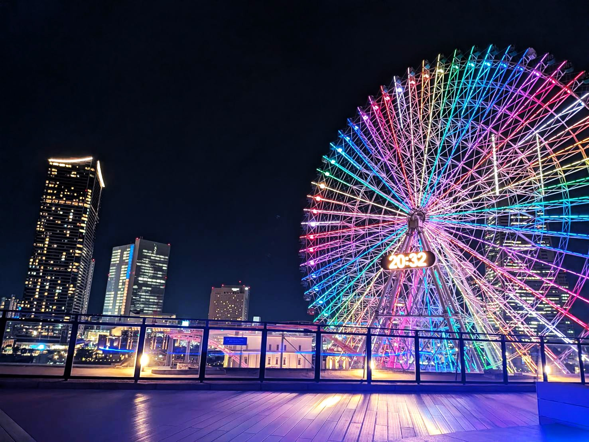
大観覧車「コスモロック21」
横浜みなとみらい万葉倶楽部の屋上から撮影した横浜コスモワールドの大観覧車です。
全高112.5m、定員480名の世界最大の時計機能付き観覧車です。
約15分間の空中散歩では、昼は360度の雄大なパノラマを、夜は宝石をちりばめたような美しい夜景を一望できます。
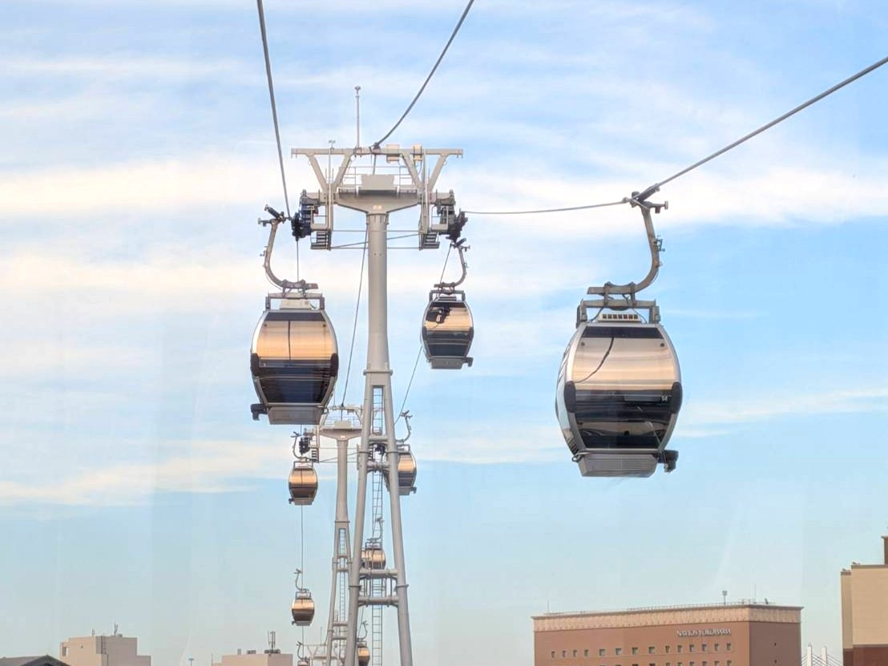
Yokohama Air Cabin
YOKOHAMA AIR CABINは日本初、世界最先端の都市型循環式ロープウェイです。
JR桜木町駅前と新港地区の運河パークとを結び、よこはまコスモワールドやワールドポーターズ、ハンマーヘッド、赤レンガ倉庫など、みなとみらいを代表する観光スポットを高所から楽しみながら移動できます。
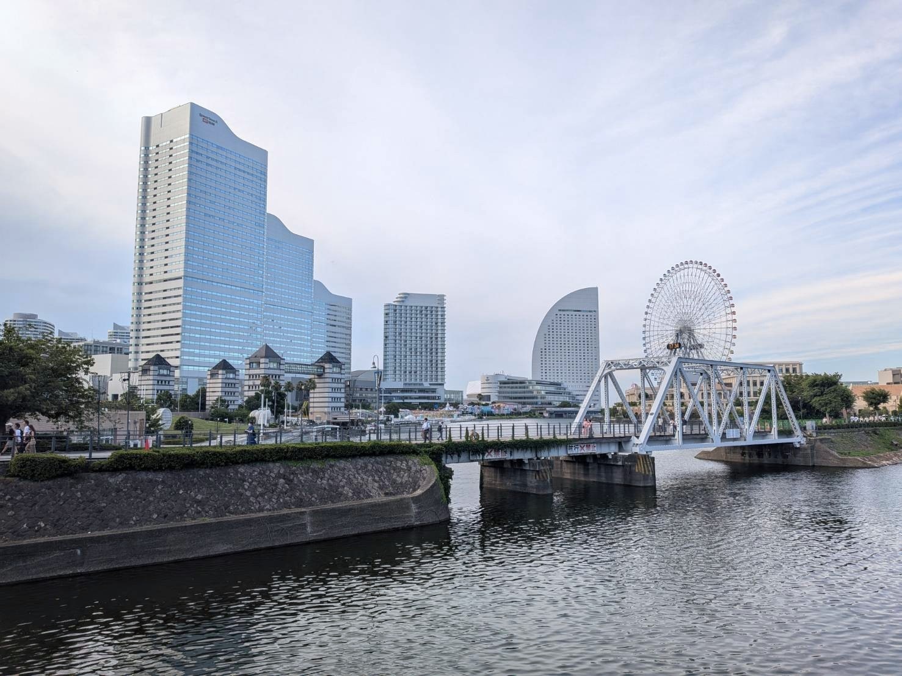
みなとみらい景色
この位置からは、みなとみらいで一番高いビル「横浜ランドマークタワー」や
ショートケーキのような形をした「ヨコハマ グランド インターコンチネンタルホテル」がよく見えます。
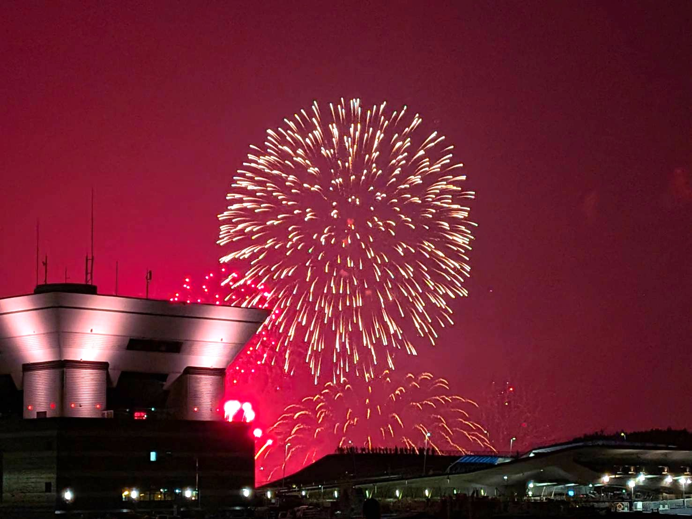
みなとみらいスマートフェスティバル2025花火大会
8/4(月)にみなとみらいで開催された花火大会です。山下公園から観覧しました。
赤レンガ倉庫、横浜ベイブリッジなどを背景に打ち上げられる花火はとても綺麗で、
みなとみらいの夜景と相まって幻想的な光景を楽しむことができました。
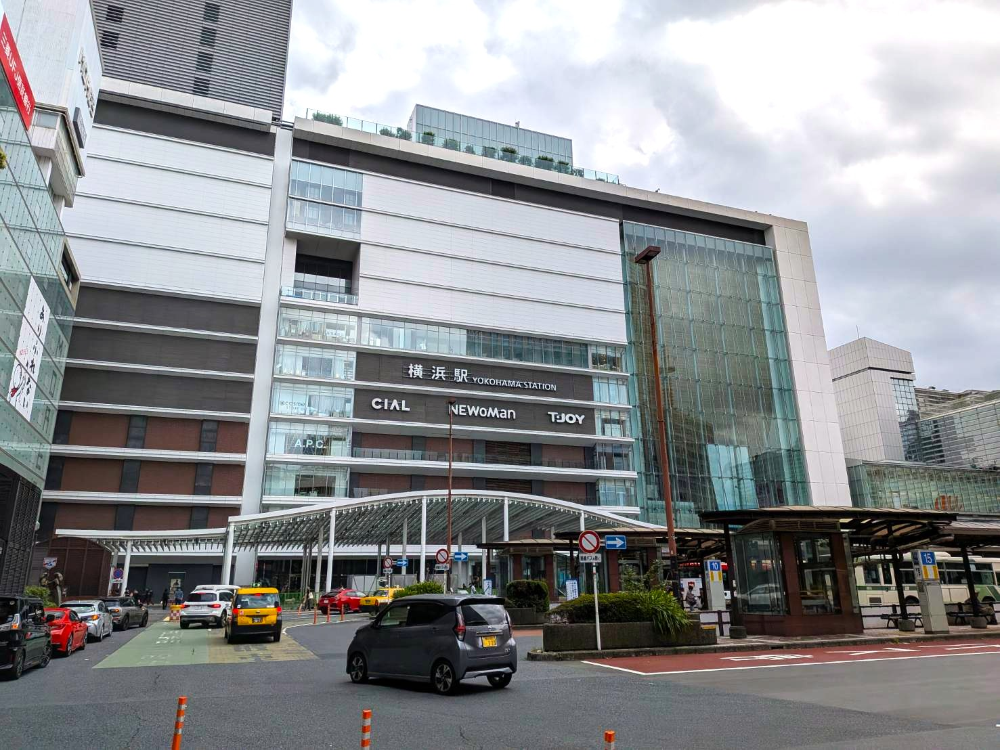
横浜駅
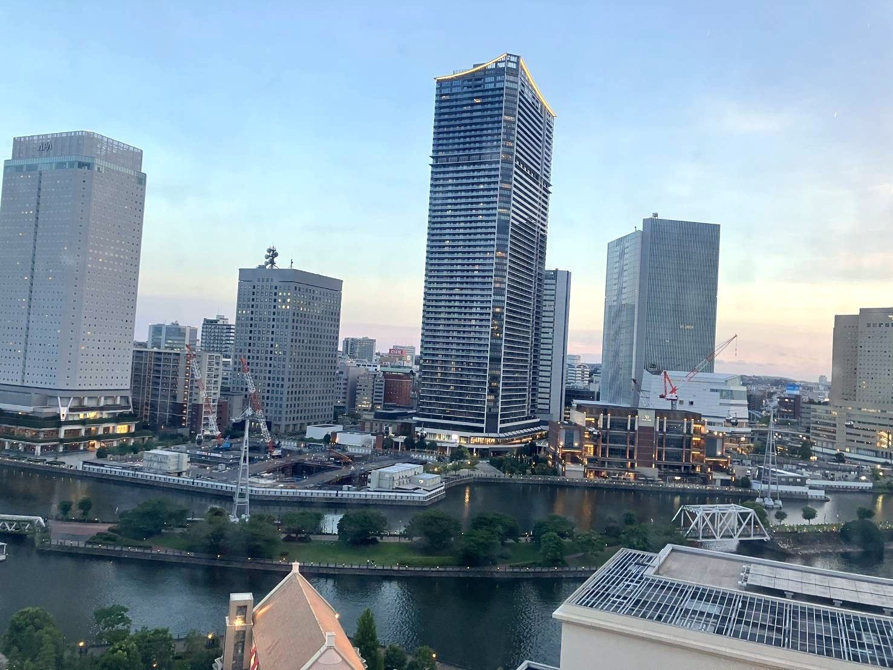
みなとみらい
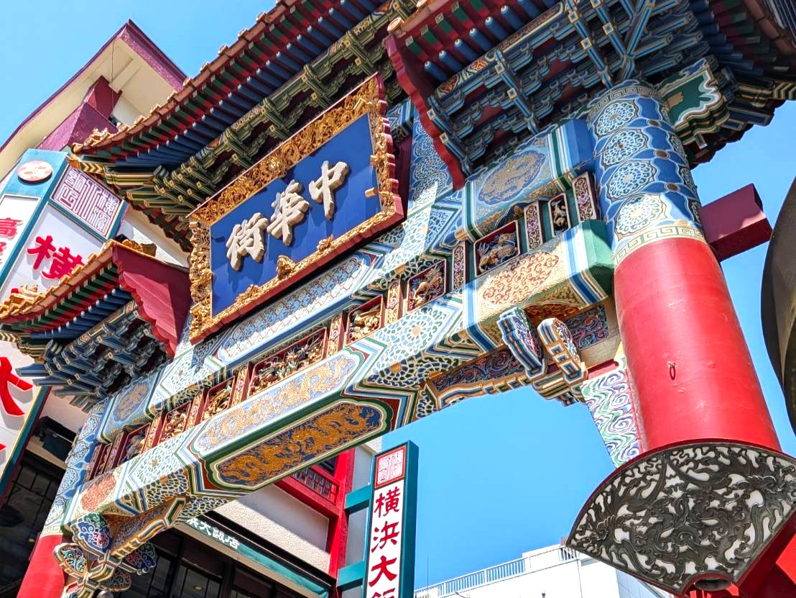
横浜中華街
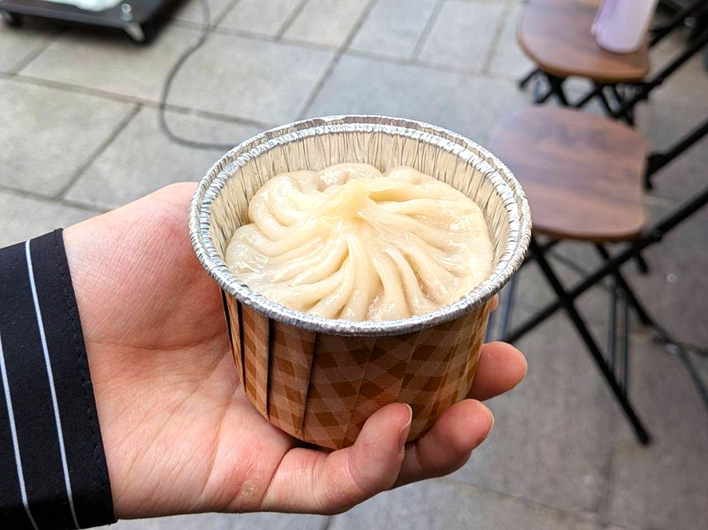
Food
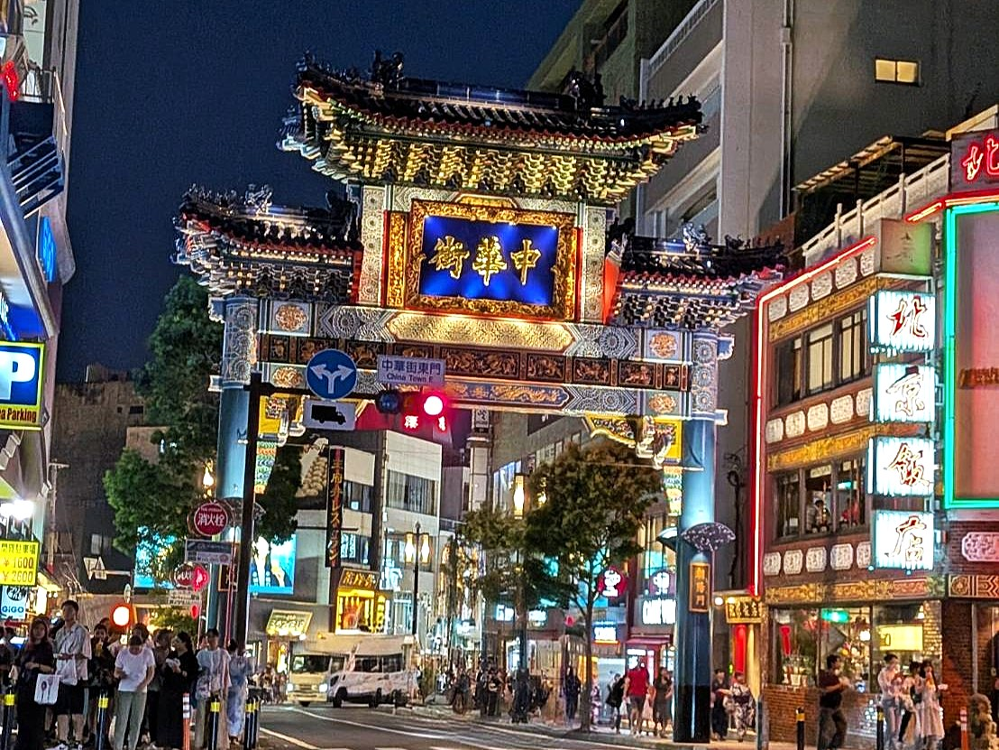
善隣門
横浜中華街のシンボルである牌楼の一つで、中華街のメイン通りである大通りの入り口に立っています。
門の裏側には「親仁善隣（しんじんぜんりん）」と書かれており、「親しく、すべての人の心に接し、仲良く」という意味で、隣国や隣家と仲良くするという願いが込められています。
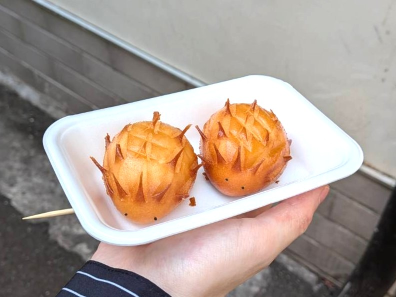
ハリネズミまん
創業1946年の老舗中華食材店「耀盛號（ようせいごう） 売店」で販売されている大人気の食べ歩き商品です。
手のひらサイズの揚げまんで、パリパリとした揚げた生地と、中のしっとりフワフワなカスタードあんが甘くて美味しいです。
ハリネズミの形をした可愛らしい見た目から、SNSでの写真投稿にも人気です。
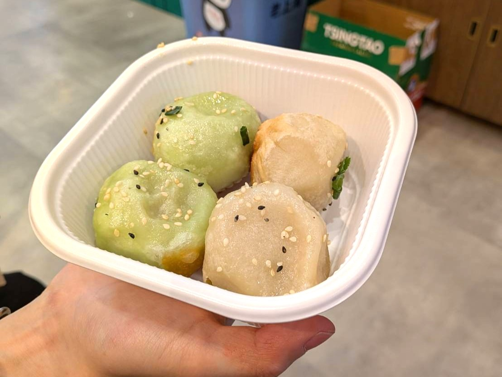
二色焼き小籠包
鵬天閣（ほうてんかく）の名物料理で、色が違う2種類の皮が特徴的です。
白いタイプは王道の豚肉あん。翡翠色のほうは皮にほうれん草を練り込んでおり、具は海老などを混ぜ込んだ海鮮豚肉あんです。
あふれる肉汁と焼き面の香ばしいカリカリ食感が絶品です。出来たてはアツアツなのでヤケドに注意してください。
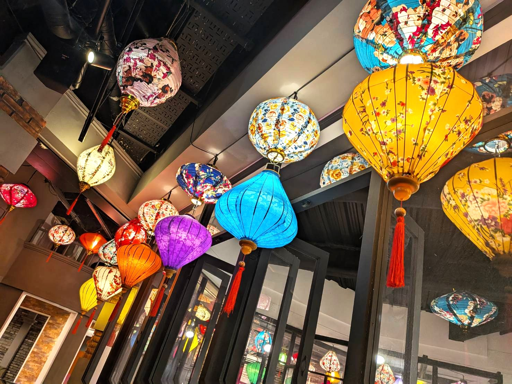
横浜中華街オブジェ
街全体やショップで、ランタンや提灯、龍飾り、中華結びなどの伝統的な中国の装飾品が使われています。
駅からのアートウォールなど、街の随所で中国文化や歓迎の想いが込められた装飾を見ることができます。
これらはとても華やかで、訪れる人々に異国情緒を感じさせ、写真撮影スポットとしても人気です。